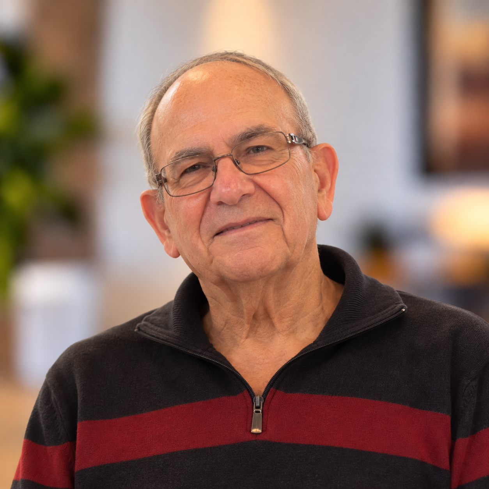
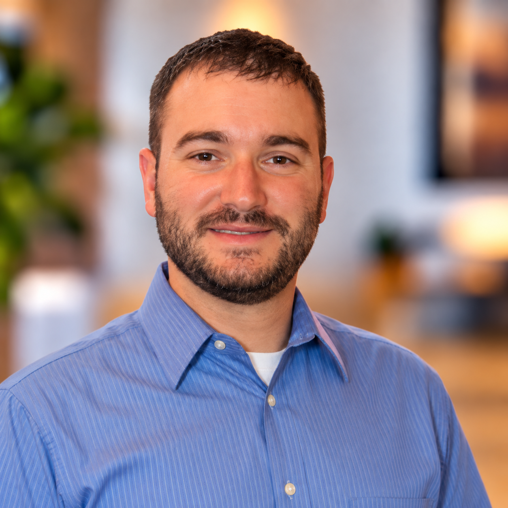

Rabbi
Rabbi Phillip Blue
Rabbi Blue is an educator and lifelong student of Torah who supports CTI through prayer, teaching, Jewish learning, and preservation of the congregation’s Sephardic traditions.
Full biography →Meet the people helping guide Congregation Tifereth Israel.
Rabbi Blue is an educator and lifelong student of Torah who supports CTI through prayer, teaching, Jewish learning, and preservation of the congregation’s Sephardic traditions.
Full biography →Jerry Pressman serves as CTI President and helps guide the congregation as it carries its distinctive Sephardic heritage into its second century.
Biography →Betty Polonsky serves as Vice President and is part of the volunteer leadership supporting CTI’s religious and communal life.
Biography →
Harvey Elefson serves as Treasurer, helping steward CTI’s financial and organizational life.
Biography →A descendant of CTI’s founding families, Joanne is a longtime cantorial soloist who learned the congregation’s Sephardic melodies from her family and has helped transmit them to later generations.
Full biography →Millie Becker serves on CTI’s board and supports the volunteer leadership that sustains the congregation and its community.
Doris Hershoff is an active member of CTI and serves on the board, continuing a longstanding commitment to congregational life and community gatherings.
Marvin Menovich serves on CTI’s board and is part of the volunteer leadership supporting the congregation.

David Podradchik serves on CTI’s board. He is also a Massachusetts pharmacist whose professional work includes ambulatory-care pharmacy.
Jay Polonsky serves on CTI’s board and contributes to the congregation’s volunteer leadership and communal life.
Wendy Tirck serves on CTI’s board and is part of the volunteer leadership sustaining the congregation.
Fran Arsenault-Shaheen serves on CTI’s board and as President of the Ladies Auxiliary, helping organize its activities and annual luncheon.